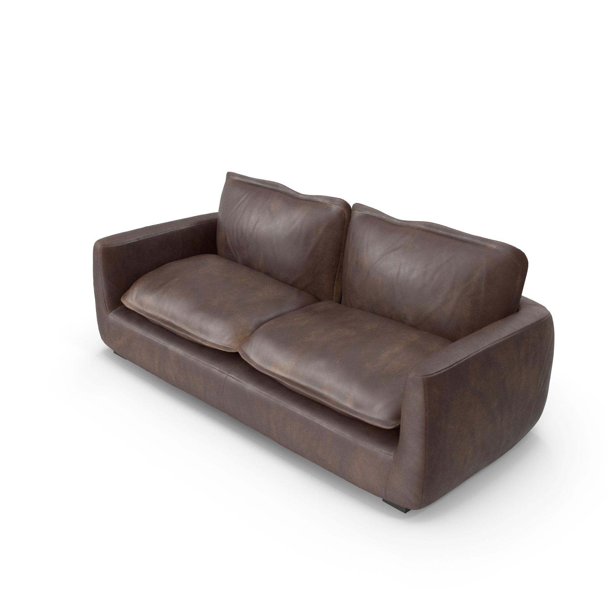
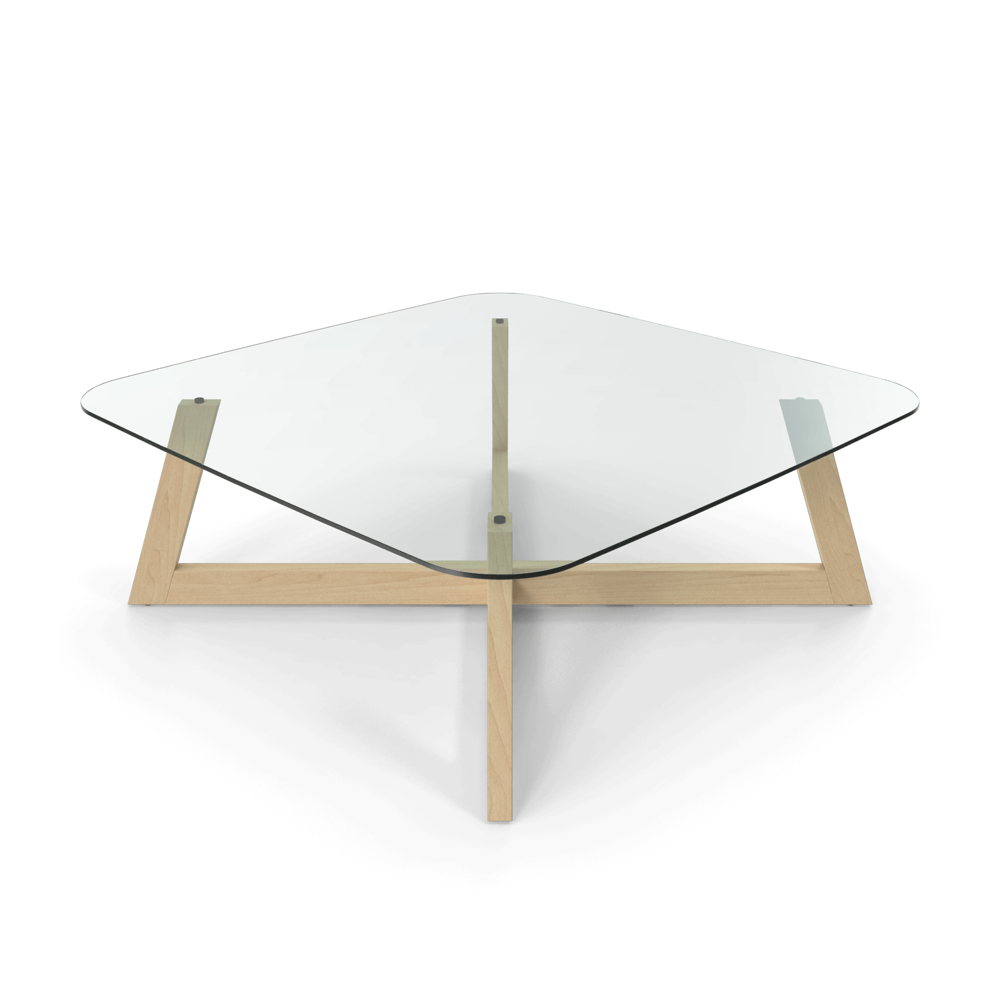
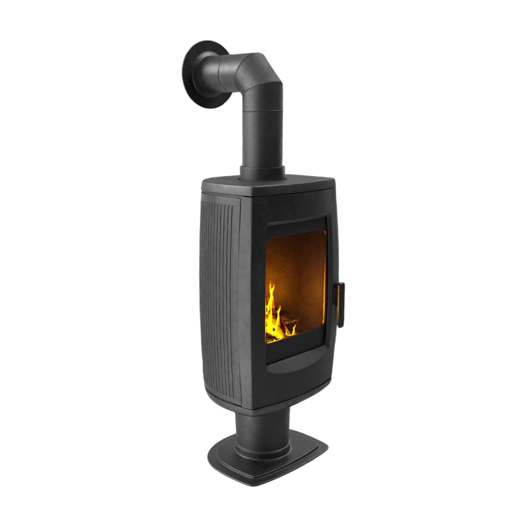

Ici, on aime le moteur rotatif. Ce site web lui est donc dédié et sont à vôtre disposition plusieurs pages vous permettant d'en apprendre plus sur ce chef d'oeuvre d'ingénierie.
N'hésitez pas à activer la musique d'ambiance en bas de page. Faites comme chez vous.
  